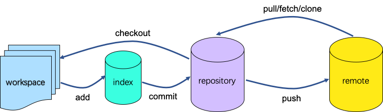
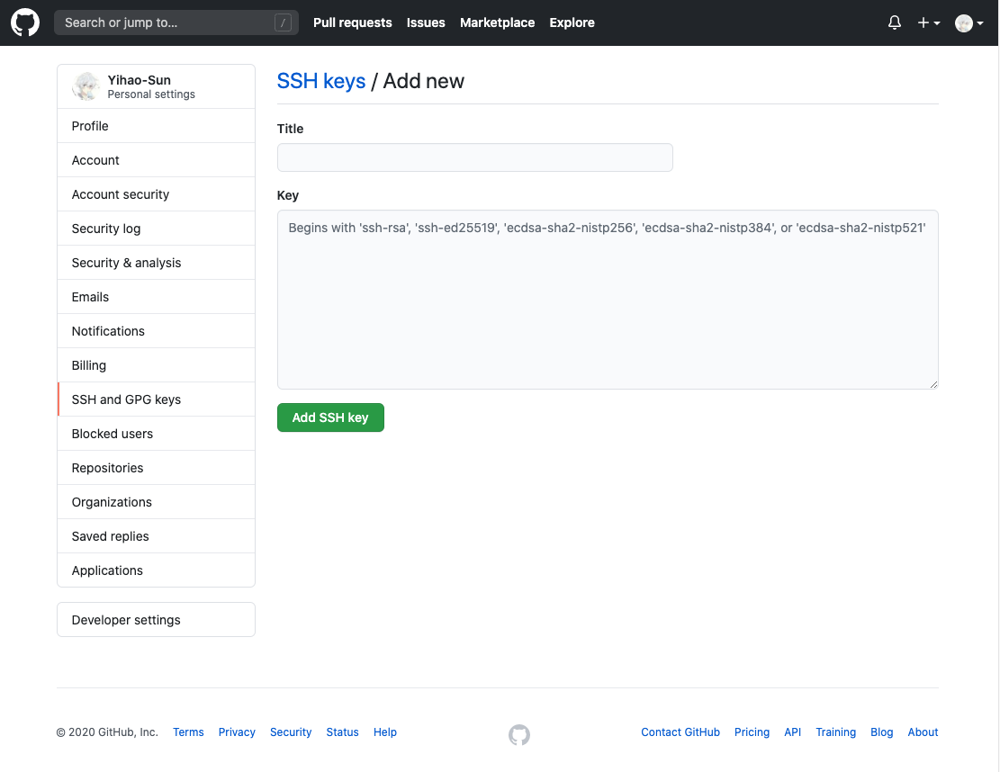
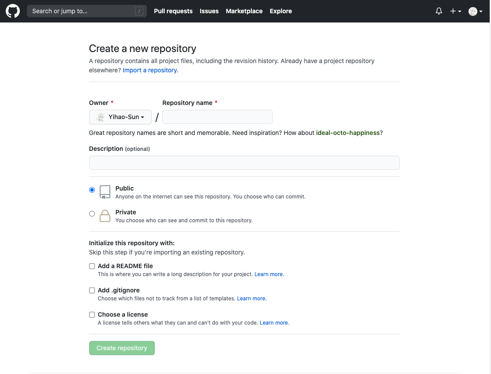
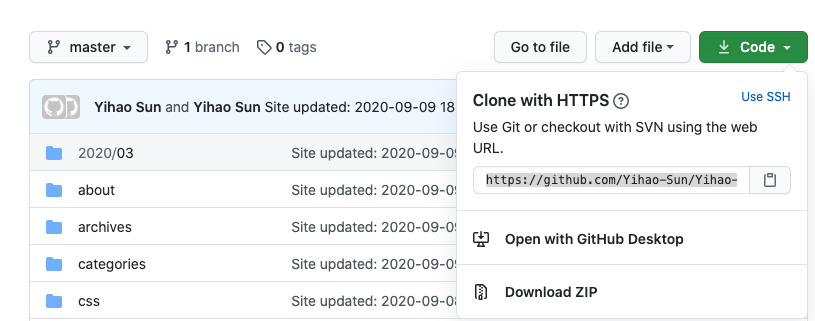

Git简介
Git 是目前世界上最先进的分布式版本控制系统(没有之一)，主要为了方便多人协同开发和版本控制。
Git的组成
GIt由本地仓库与远程仓库构成，其中本地仓库由工作区(workspace)、暂存区(stage)和版本库(repository)构成：工作区就是你项目文件夹下的各种文件，这是用户能直接进行添加、修改、删除的操作的地方；暂存区保存了下次将提交到仓库的文件信息列表，用来存储每天一小阶段的工作；版本库保存了你提交的所有版本的数据记录。版本库的内容可以是从本地工作区(从工作区添加到暂存区再到仓库区)提交的，也可以是从远程仓库中拉取下来的。
Git的工作逻辑
其工作逻辑如下图所示：

举个简单的例子，张三想要与他人合作完成一个项目，首先他需要在GitHub上创建一个项目仓库，然后将仓库clone到在自己的电脑上，于是本地就多了一个项目文件夹，这就是本地仓库，里面有若干文件(初始时应该只有一个README)和.git隐藏文件夹，若干文件构成了工作区，.git文件下就保存了该仓库的信息，包括暂存区(存储在index文件中)与版本库的信息；然后张三每次对于工作区文件的更改，都可以通过指令同步到本地仓库中(首先将更改添加(add)到暂存区，然后再提交(commit)到版本库)，接着张三就可以把本地仓库的内容同步(push)到远程仓库。同样的作为其他开发成员的李四也可以从远程仓库拉取(fetch/clone)项目到自己的本地仓库，李四也可以更改项目并上传远程仓库，这样就可以实现多人合作开发。
Git的初步配置
首先我们需要在本地安装Git工具，有了这个工具我们就可以执行Git的各种指令，如何安装可以自行Google/百度，然后我们需要一个远程仓库，通常选择GitHub，在GitHub上注册账号即可，然后我们需要配置ssh密钥来完成本机与远程仓库的互联。
GitHub使用ssh认证，通俗来讲，就是你的本地要想向远程仓库上传或者从其拉取，需要一个认证，而这个认证就是ssh，ssh密钥由公钥和私钥组成，其中公钥要填写到GitHub网站上，私钥保存在本机上，具体操作为：
- 在本机执行指令
1 | ssh-keygen -C "你的GitHub邮箱" |
这时会在你本机的主目录下生成一个.ssh的文件夹，里面存放了私钥和公钥，其中后缀为.pub为公钥。
- 复制公钥里面的内容到GitHub上(在Settings里的SSH and GPG keys选项，点击 New SSH key)

填写好title和公钥即可
- 在GitHub上新建一个远程仓库(Your repositories里点击new)

填写好信息(推荐勾选”Add a README file”)即可创建完成
- 将远程仓库拉取到本地
点击新建好的仓库，然后复制仓库的URL地址

在本机上输入指令
1 | git clone "你的仓库URL" |
到此为止，我们就完成了远程仓库与本地仓库的初始化。